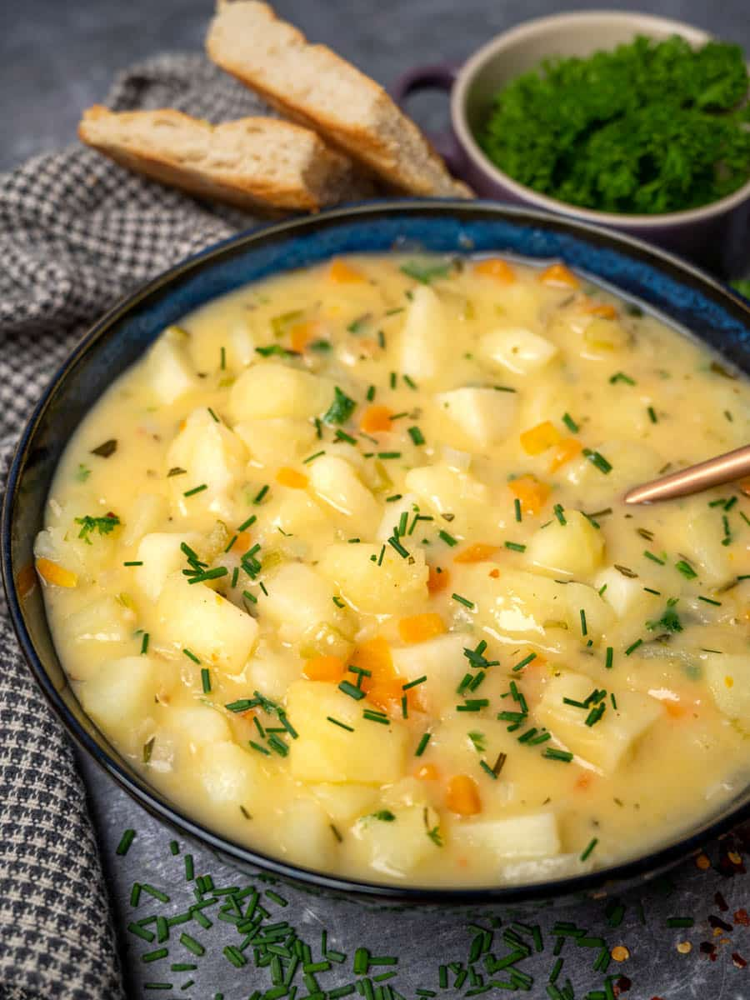
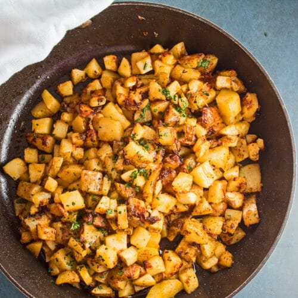

Creamy Vegan Potato Soup

Enjoy this soup either as an appetizer or as a side dish with the roast.
Either way, it perfectly compliments the flavors to elevate both dishes, and
is easy to prepare while the seitan is roasting. This is a recipe that you'll
want to keep in your rotation year-round!
Ingredients
- Potatoes
- Coconut Milk
- Yellow Onion
- Liquid Smoke
- Sage, dried or Fresh
- Garlic Powder
- Paprika
- Vegetable broth
- Nutritional Yeast
- Salt and Pepper to taste
Directions
- Amet purus quis blandit turpis. Mattis nunc sed blandit libero. Integer feugiat scelerisque varius morbi enim nunc faucibus a. Convallis tellus id interdum velit laoreet.
- Vivamus arcu felis bibendum ut tristique. Sed odio morbi quis commodo odio aenean. Dignissim sodales ut eu sem integer vitae justo eget magna. Sed tempus urna et pharetra.
- At erat pellentesque adipiscing commodo elit at. Vulputate mi sit amet mauris. Eu ultrices vitae auctor eu augue. Et malesuada fames ac turpis egestas integer eget aliquet. Ac orci phasellus egestas tellus rutrum tellus pellentesque eu tincidunt.
- Rhoncus mattis rhoncus urna neque viverra. Ornare lectus sit amet est placerat in egestas erat imperdiet. Quis auctor elit sed vulputate mi sit. Quis auctor elit sed vulputate mi.

- Pellentesque elit ullamcorper dignissim cras tincidunt lobortis feugiat vivamus. Nibh sit amet commodo nulla facilisi nullam vehicula.
- Ut faucibus pulvinar elementum integer enim neque. Feugiat in fermentum posuere urna.
- Lacinia quis vel eros donec (ac odio tempor).
- Adipiscing elit duis tristique sollicitudin nibh sit amet commodo nulla. Non diam phasellus vestibulum lorem sed risus ultricies tristique nulla. Fermentum dui faucibus in ornare quam viverra orci.
Serve immediately and enjoy! Don't forget to leave feedback if you enjoyed this recipe.